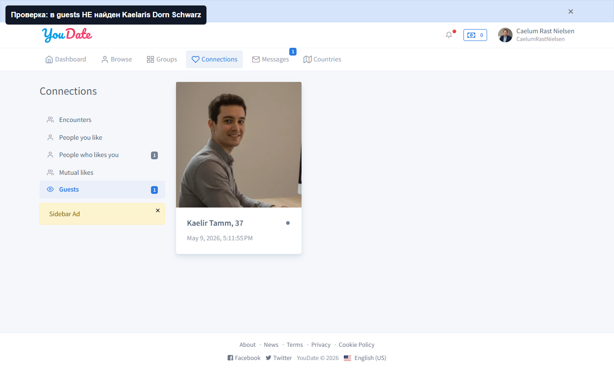
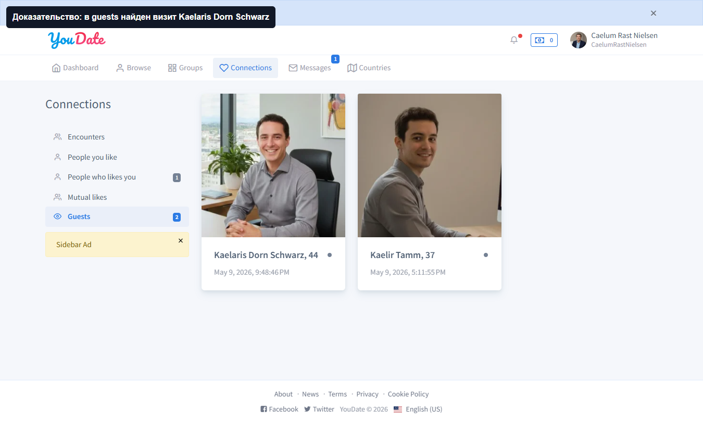
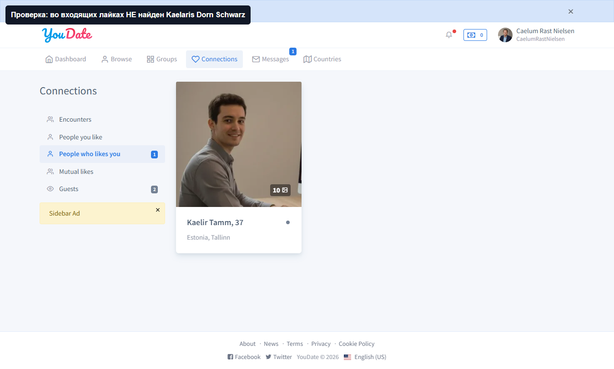
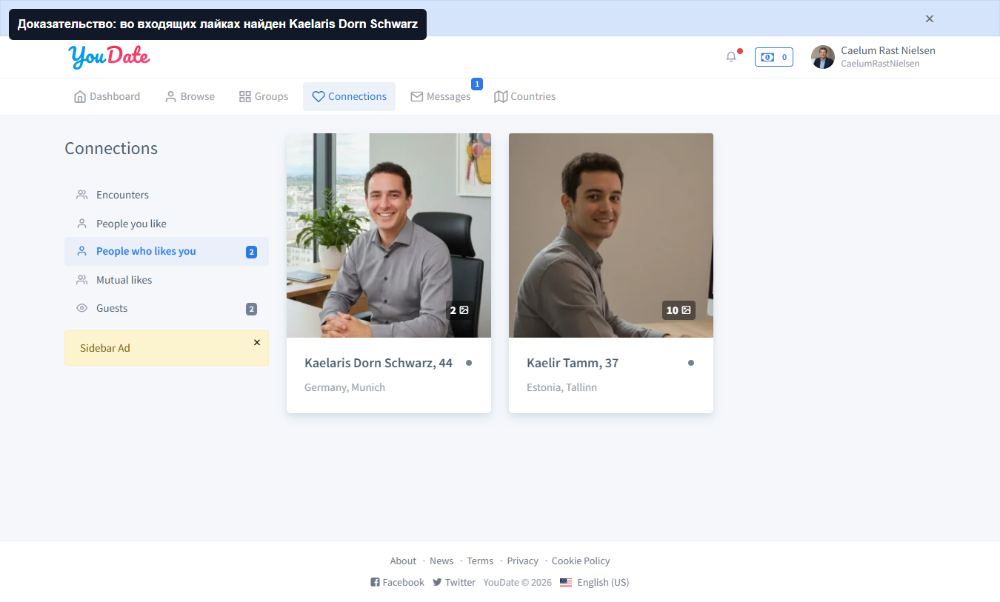
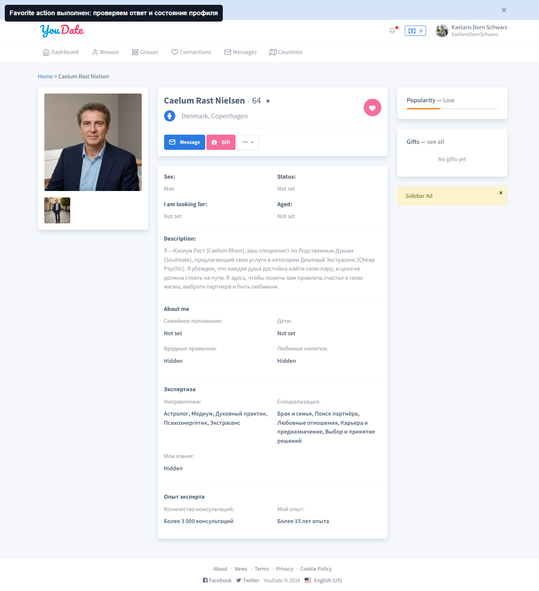
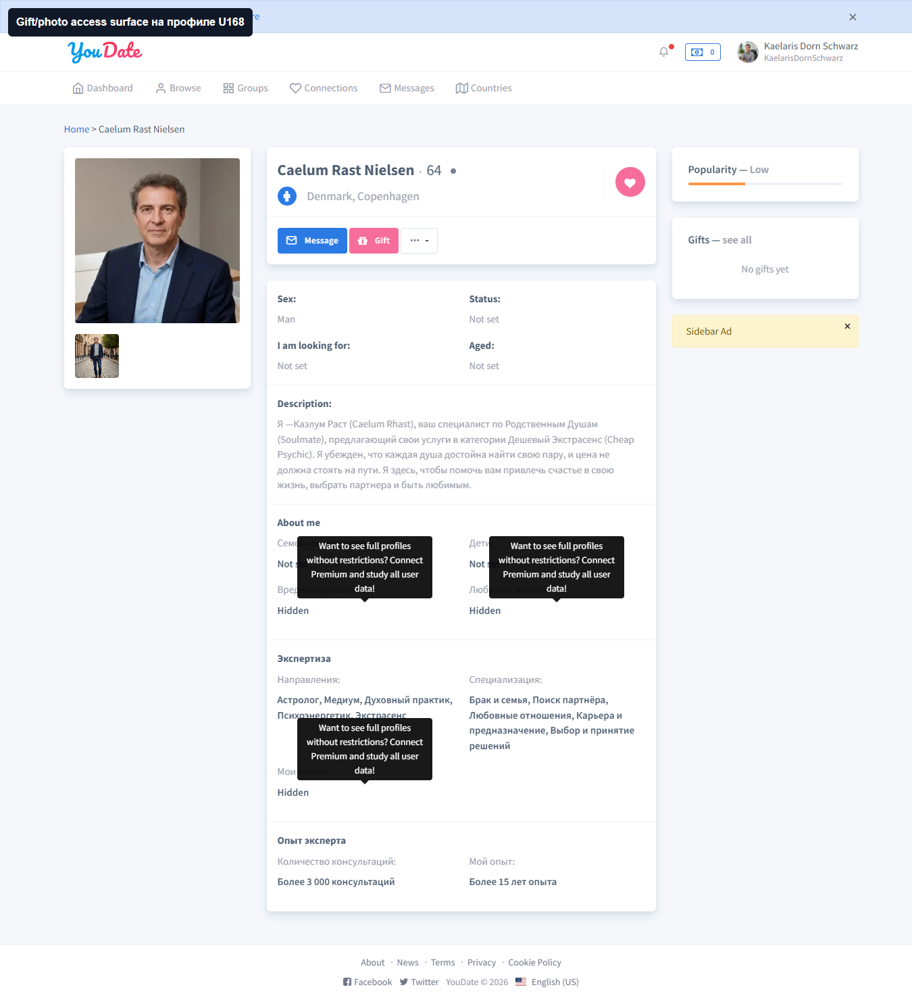

PASS
Guests before
Что тестировал: до визита U166 отсутствует в guests у U168. Что получил: на экране есть старый Kaelir, но нет Kaelaris Dorn Schwarz.

Confideline QA/BA · 2026-05-10
Сценарный проход по пользовательским взаимодействиям на чистой паре U166 -> U168. Проверялись before/after состояния у получателя, чтобы не повторять старый частичный вывод по загрязненной паре.
Дефектов для Игоря нет.
До действия не было guest/like следа.
Guest visit и like проверены со стороны получателя.
Favorite, gift, photo access surfaces найдены.
Новых подтвержденных дефектов нет. На чистой паре U166 -> U168 визит в профиль и лайк создают ожидаемый видимый результат у получателя U168.
Предыдущий run `184 -> 166` оставлен только как diagnostic: там before-state уже содержал старые guests/likes, поэтому он не используется как источник правды.
| Квадрант | Зона | Наблюдение | Почему важно | Совет | Как проверить готовность |
|---|---|---|---|---|---|
| Важно, но не срочно | QA fixtures / user interactions | Взаимодействия типа visits/likes нельзя тестировать на любой паре: старые следы превращают PASS в WARN. | Без чистой пары тестировщик не сможет доказать, что именно новое действие создало новый результат. | Для будущих interaction-тестов держать пул чистых пар или добавлять автоматический поиск пары с before-state `not contains`. | Перед действием в отчете есть before-screen без actor, после действия after-screen с actor. |
| Статус | Проверка | Before | Action | After |
|---|---|---|---|---|
| PASS | Profile visit -> Guests | U168 не видит U166 в guests. | U166 открывает профиль U168. | U168 видит U166 в guests. |
| PASS | Like -> People who likes you | U168 не видит U166 во входящих лайках. | U166 отправляет like на U168. | U168 видит U166 во входящих лайках. |
| PASS_SURFACE | Favorite | Открыт профиль U168. | Найден favorite action, POST успешен. | Surface работает как локальное действие актера. |
| PASS_SURFACE | Gift | Открыт профиль U168. | Проверены gift form/actions. | Подарок не отправлялся в этом проходе, потому что это отдельный paid/balance сценарий. |
| PASS_SURFACE | Photo access | Открыт профиль U168. | Найдены photo/private/access признаки. | Полный request-flow остается отдельным сценарием с owner-side проверкой. |
Что тестировал: до визита U166 отсутствует в guests у U168. Что получил: на экране есть старый Kaelir, но нет Kaelaris Dorn Schwarz.

Что тестировал: после открытия профиля U168 пользователем U166 новый визит появляется у получателя. Что получил: карточка Kaelaris Dorn Schwarz появилась в guests.

Что тестировал: до лайка U166 отсутствует во входящих лайках U168. Что получил: исходный список не содержит Kaelaris Dorn Schwarz.

Что тестировал: после like U166 -> U168 получатель видит новый входящий лайк. Что получил: Kaelaris Dorn Schwarz появился в People who likes you.

Что тестировал: наличие и успешный POST favorite на профиле. Что получил: action найден, запрос выполнен успешно; это локальный surface актера.

Что тестировал: есть ли на профиле surfaces для gift и photo access. Что получил: gift form/actions и photo access/private признаки найдены; полный paid/request flow выносится в отдельный тест.

user-interactions-scenario.json · user-interactions-scenario.md